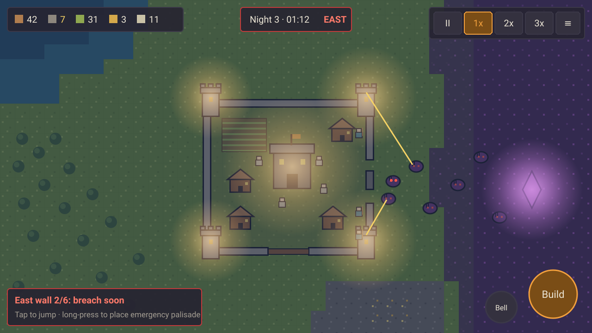

Hollowkeep
A pocket-sized Rise to Ruins. You build a village by day and hold it by night, with one thumb, in five-minute bites.
Pillars
- Night judges the day. Every daytime choice is a bet on the coming night, and the night delivers the verdict. There's no combat micro: the fight plays out from your preparation.
- A village that lives without you. Villagers choose their own jobs from your priorities. You set zones, priorities and blueprints, and never give orders to individual villagers.
- Readable at a glance, playable with a thumb. The far zoom level tells the whole story: the threat side, wall health, stockpiles and corruption. Every action can be reached from the bottom-right thumb zone.
Core loop
Long-term pressure: each night the corruption claims more of the map, so resources get scarcer and the waves get closer. Purifying a corruption node is a risky daytime expedition that wins land back.
Session length
- One day and night is about 5 min at 1x, or about 3 min at 2x.
- A run is 12–15 nights, about 45–70 min. The game autosaves every dawn, so any 5–10 minute sitting ends at a clean stopping point.
- The target is 1–3 cycles per sitting: a commute, a coffee, or a queue.
Three moments to remember
- "The wall at one." On night 1 the wall drops to 1 HP and the last monster dies against it. You won, just, and you can see exactly why. (This came straight from paper run B.)
- "Wrong side." The omen said East, but on night 7 a second wave comes from the North. Villagers ring the bell and sprint for the keep while you drop an emergency palisade across the gap.
- "Pushing back the dark." The dawn after a brutal night, you send a torch party into the corruption, and when the node falls, grass creeps back across the map in front of you.
Mockup
Night 3, with a wave coming from the east. It's deliberately rough: it's here to test readability, not to show final art.

Finding: purple monsters vanish against purple corruption at night. Monsters need a bright rim or glowing eyes, or the corruption ground should shift toward a darker, desaturated tone.
Art direction
Top-down pixel art with 16 px tiles and 8×10 px villagers. Characters and buildings get 1 px ink outlines; terrain doesn't. Nearest-neighbour scaling everywhere.
- Terrain is muted and mid-value so that villagers, buildings and monsters read on top of it.
- Warm = ours (torch, wood, cloth). Cold/purple = theirs (corruption, monsters).
- Accent orange is reserved for "your attention, please": selection, alerts, and the active speed button.
- Night is a cold multiply overlay with additive warm light pools, so the same sprites work for day and night.
Paper prototype: wave vs. economy
Played by hand on a 12×12 grid with a d6 and a d4. The dice came from a seeded roller and were used in order, so both runs are reproducible.
Rules v0
- Setup: Hall 6 HP (0 = loss). 4 villagers. 6 wood, 2 stone, 6 food.
- Dawn: roll the omen (d4 = N/E/S/W). That's tonight's attack side.
- Day: 3 phases, and each villager does 1 job per phase. Chop gives 1 wood (2 on a 4+), Quarry 1 stone (2 on a 5+), Forage 1 food (2 on a 5+), Farm 2 food (needs a farm, max 2 farmers), and Build 1 build point.
- Buildings: Farm costs 2 wood and 1 BP. House costs 4 wood and 2 BP, and adds 2 villagers. Tower costs 2 wood, 2 stone and 2 BP; it covers its own side and hits on a 3+ at distance ≤2. A wall on one side costs 3 stone and 2 BP and has 6 HP.
- Dusk: each villager eats 1 food. Guards skip the next morning phase; they hit on a 5+ once monsters arrive.
- Night n: 1 + 2n monsters (2 HP each) start 3 steps out. There are 6 rounds of fire, then advance, then attack. Walls absorb hits. Without a wall, each monster rolls: 1–2 steals, 3–5 hits the Hall, 6 kills a villager.
Run A (v0): lost on night 2
Night 1 (North): survived, but the first attack round killed a villager before the guards could act. Night 2 (South): the North tower was useless, there was no stone for a wall, and the waves grew from 3 to 5 monsters. The Hall fell in round 4.
- A wave growth of +2 per night outruns the workforce.
- Deaths on first contact feel unfair.
- Towers that cover a single side are a trap when the omen changes every night.
- Without stone there are no walls, and without walls there's no time.
Rules v1 (changes)
- 2 + n monsters per night. Start with 5 villagers.
- Guards fire at distance ≤1. Towers also fire at adjacent sides at distance ≤1.
- An unwalled 6 wounds a villager; a second wound kills.
Run B (v1): survived 3 nights
Night 1 (West): the wall ended at 1/6 and the last monster died on it, the best moment in either run. Night 2 (South): the wall was breached in round 5, but the last monster died in round 6. Night 3 (East): 7 villagers and 4 towers left the wall at 2/6, with no losses.
- v1 night 1 is the target feel.
- By night 3 the village snowballs. Wave size needs to grow superlinearly from about night 4, with multi-side waves from about night 5.
- A perfect omen turns into a checklist, so it should go fuzzy from night 3.
- Food is too easy. Farms should yield 1 food, or 2 on a 4+.
- Stone is the real bottleneck; keep it that way.
- The tired-guards rule creates a real choice.
Tuning targets
- On average, walls should end each night at 0–30% HP.
- No villager deaths before night 3 unless the omen is ignored.
- First contact should come about 30 s into a 90 s night.
- Stone income should roughly equal wall-repair demand.
NOT in 1.0
| Multiplayer | Needs netcode and a lockstep sim, so it's a second game. |
| Campaign / story | 1.0 is the endless sandbox run. |
| Mod support | Needs a stable data format first. |
| Trade, caravans, diplomacy | The loop has to work without a second economy. |
| Direct unit control / heroes | Breaks pillar 2. |
| Villager traits & relationships | Dwarf Fortress depth is a trap at this size. |
| Seasons, weather, biomes | One biome and one cycle, done well. |
| Big tech tree | About 15 buildings that fit a phone-sized build menu. |
| Accounts, cloud saves, leaderboards | No backend; saves stay local. |
| Ads / IAP | No monetization design work. |
| Map editor | Seeds are the levels. |
| Localization | Keep strings in one table so it's possible later. |
Homework (only you can do this)
- Play Rise to Ruins for 5+ hours, logging each moment you feel tense, bored, delighted or confused, with the game day and your guess at why.
- Kingdom Two Crowns: how little UI it needs, and the dread at dusk.
- Bad North: mobile readability on a small, tactical map.
- They Are Billions: wave telegraphing, and how one breach cascades.
- Dwarf Fortress (Classic): autonomous jobs from designations, and what not to copy for a phone.
- Afterwards, write down 3 things to steal, 3 to avoid, and the one feeling Hollowkeep must deliver, then update this page.